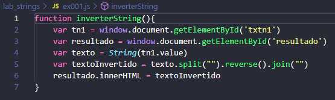

Laboratório JavaScript
João Luiz Rezende Silva
1. Faça um programa que leia uma frase e escreva abaixo invertendo os caracteres -o primeiro se torna o último, o segundo o penúltimo e assim por diante.
Código:

Resultado
Clique aqui para retornar para a lista